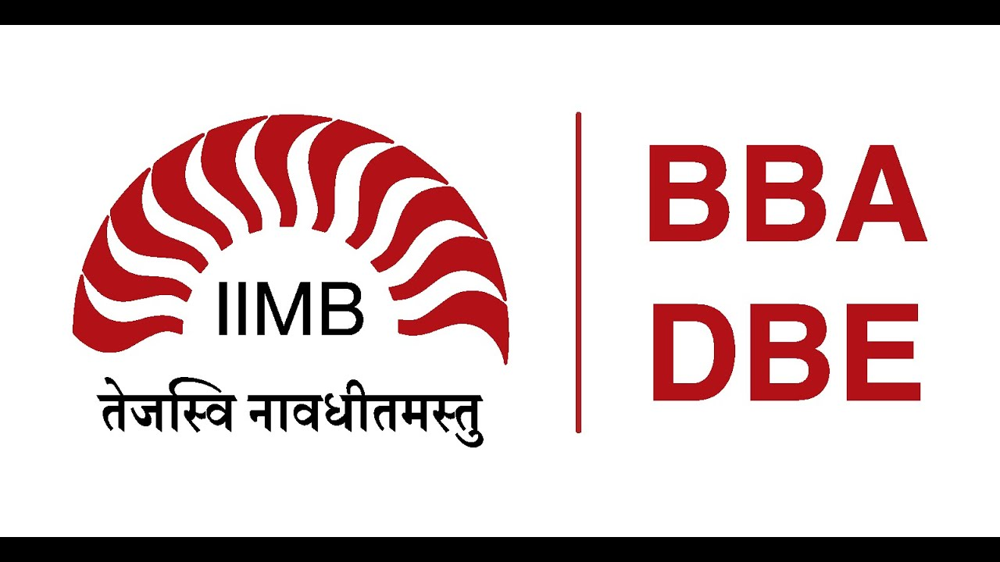
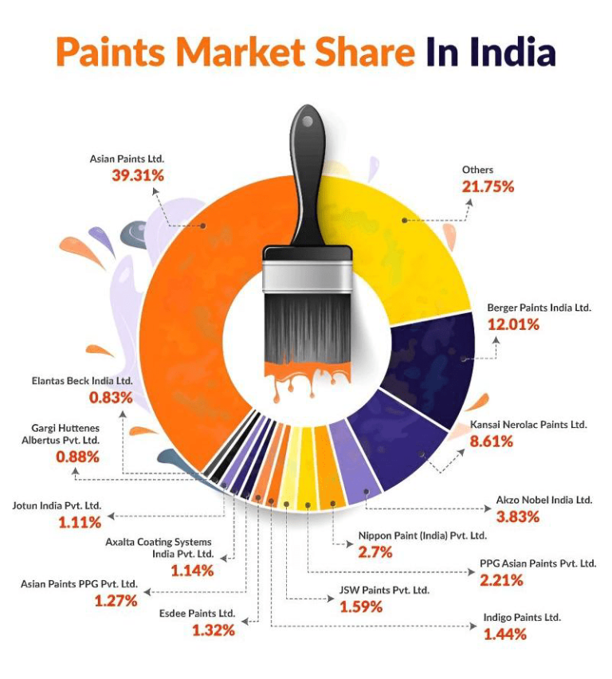
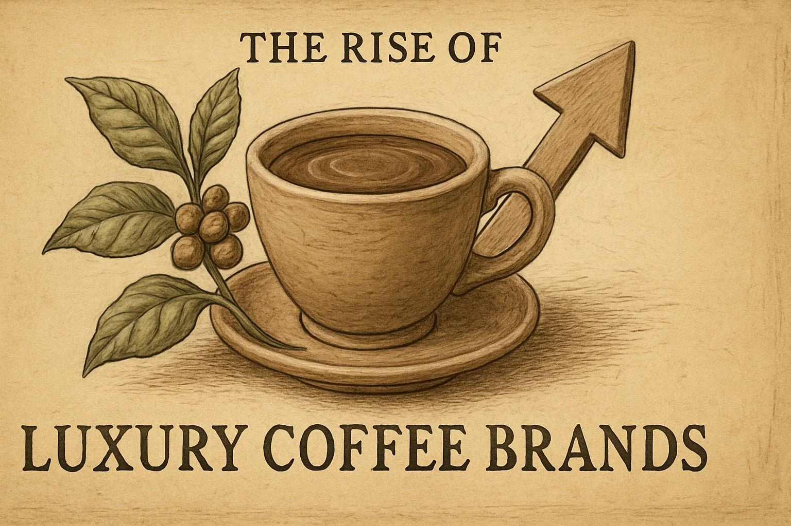

CHRIST University, Bengaluru
BCom Honours in Finance and Investment
2026 - Present
Exploring financial markets, investment analysis, business performance and consumer behaviour.
FINANCE . PSYCHOLOGY . STRATEGY
I enjoy connecting ideas that don't seem related at first. My curiosity about businesses, financial markets and human behaviour drew me towards the intersection of finance, business and psychology.
Know More.jpg)
01 / ABOUT
I am pursuing BCom Honours in Finance and Investment at CHRIST University alongside the BBA in Digital Business and Entrepreneurship programme at IIM Bangalore. I am interested in understanding not just how businesses and markets work, but also why people make the decisions they do.
My interest in fintech comes from the possibilities created when finance meets technology and consumer behaviour. I enjoy learning beyond the boundaries of my degree and exploring new areas of knowledge.
Some of the areas I am particularly interested in exploring:
Outside academics, I enjoy creative writing, exploring mutual fund investing and analysing films and television through storytelling and behavioural perspectives.
I find value in being a good listener and creating spaces where people feel welcome. Teaching younger students and helping them understand difficult concepts has been especially fulfilling for me.
02 / EDUCATION
BCom Honours in Finance and Investment
2026 - Present
Exploring financial markets, investment analysis, business performance and consumer behaviour.

BBA in Digital Business and Entrepreneurship (DBE)
2026 - Present
An interdisciplinary programme providing exposure to digital business, technology and entrepreneurship, including areas such as website development, statistics and UI/UX.
CBSE – Class XII | Commerce | 98%
2026
Scored a centum in Marketing and Business Studies.
CBSE – Class X | 95%
2024
Scored a centum in Social Science.
03 / EXPERIENCE
Junior Analyst – Fundamentals Wing | CHRIST University
2026 – Present
Part of the equity research team, exploring company fundamentals, financial performance and business positioning, with an interest in connecting financial analysis with consumer and brand perspectives.
CR Wing | CHRIST University
2026 – Present
Involved in club activities, communication and coordination initiatives.
Audit Wing
2026 – Present
Part of the student team contributing to association activities and audit-related work.
Delegate Affairs | CHRIST University
2026 – Present
Involved in delegate coordination and participant engagement for Model United Nations activities.
Writing Team | CHRIST University
2026 – Present
Explore ideas and perspectives through creative writing and editorial contributions.
Event Head – House of Cards
2024;2025
Led an interschool commerce event, contributing to its planning, coordination and execution. Also represented my school at commerce fests and interschool competitions.
Student-led Initiative
2024 – Present
Teach and mentor younger students, simplifying challenging concepts and adapting explanations to different learning styles.
04 / PROJECTS
My projects explore questions at the intersection of finance, business strategy and consumer psychology. I enjoy understanding the ideas behind the numbers and the people behind the markets.
EQUITY RESEARCH
Examined Titan's financial performance and business positioning, with a focus on affordable luxury, brand value and consumer trust.
Focus: Financial analysis and company research

INDUSTRY ANALYSIS
Studied the competitive landscape of the Indian paints industry, comparing major players and applying oligopoly theory to understand market competition.
Focus: Industry research and economics
CONSUMER PSYCHOLOGY
Explored how emotions, storytelling and psychological cues influence consumer engagement, brand perception and decisions.
Focus: Behavioural psychology and marketing
FINANCE AND DEVELOPMENT
Explored how digital payment systems contribute to economic development, financial accessibility and changing consumer behaviour.
Focus: Digital finance and economic development

MARKETING STRATEGY
Examined segmentation, targeting and positioning strategies in the coffee market, exploring how brands differentiate themselves and build loyalty.
Focus: Market segmentation and brand positioning
05 / SKILLS
| Area | Skills and Competencies |
|---|---|
| Finance | Equity Research, Financial Analysis, Mutual Fund Investing |
| Business | Market Research, STP, Consumer Behaviour, Industry Analysis |
| Communication | Creative Writing, Public Speaking, Presentation, Teaching |
| Interpersonal | Active Listening, Collaboration, Empathy, Teamwork |
| Languages | English, Marathi, Hindi and French |
06 / ACHIEVEMENTS
07 / INTERESTS
08 / CONTACT
Always happy to connect with people who enjoy exchanging ideas, exploring new perspectives and finding connections between seemingly unrelated things.
Email: samihawxxxx@ymail.com
Phone: +91 720 47X XXXX
LinkedIn: Samiha Wathodkar